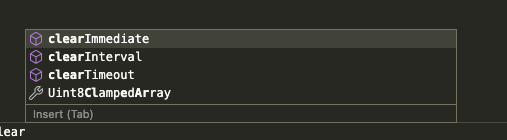

June 2021 (version 1.58)
Update 1.58.1: The update addresses these security issues.
Update 1.58.2: The update addresses these issues.
Downloads: Windows: User System Arm64 | Mac: Universal Intel silicon | Linux: deb rpm tarball Arm snap
Welcome to the June 2021 release of Visual Studio Code. There are a number of updates in this version that we hope you will like, some of the key highlights include:
- Terminals in the editor - Create or move terminals into the editor area.
- Workspace Trust - Quickly customize Workspace Trust settings, disable Restricted Mode banner.
- Editor scroll bar customization - Set bar visibility and width, click navigation behavior.
- Markdown preview KaTeX support - Math support in the Markdown preview.
- Settings editor improvements - Support for multiple checkboxes and enumeration dropdowns.
- Sticky debug environment choice - Debugger remembers your previous environment choice.
- Jupyter Interactive window - Run Jupyter code directly in an interactive window.
- Jupyter notebook debugging - Debug Jupyter notebook code from within VS Code.
- Data Science tutorials - Learn about Jupyter Notebooks, PyTorch, and more.
If you'd like to read these release notes online, go to Updates on code.visualstudio.com.
Join us live at the VS Code team's livestream on Tuesday, July 13 at 8am Pacific (4pm London) to see a demo of what's new in this release, and ask us questions live.
Insiders: Want to try new features as soon as possible? You can download the nightly Insiders build and try the latest updates as soon as they are available.
Workbench
Workspace Trust
The Workspace Trust feature was a big change that came in the 1.57 release and we believe it is important that developers can safely browse code, even when they are unfamiliar with the source. This milestone we've been absorbing customer feedback and have focused on fixing issues and following up on suggestions.
In order to help people discover the user settings that can customize Workspace Trust, there is a new Configure your settings action in the header of the Workspace Trust editor. This action will bring up the Settings editor filtered by @tag:workspaceTrust.
Speaking of settings, there is a new setting to configure when the banner appears indicating that the current window is in Restricted Mode. Similar to the security.workspace.trust.startupPrompt setting, the new security.workspace.trust.banner allows you to disable the banner after you've become familiar with the Workspace Trust feature and don't need a reminder that you are working in Restricted Mode. By default, this banner shows once per workspace and remains until it is dismissed ("untilDismissed"). The other options for displaying the Restricted Mode banner are "always" and "never".
You can learn more about the rationale and development of Workspace Trust in the recent Workspace Trust blog post. The post explains how Restricted Mode helps protect you from unintended, and potentially malicious, code execution and has tips to set up your development machines so you can work both quickly and safely.
Settings editor
This iteration adds support to the Settings editor for settings objects with a fixed number of Boolean properties, by rendering the properties as a list of checkboxes.
This iteration also adds additional support for arrays of enumerations, by using dropdowns in editing mode instead of plain textboxes.
Transient workspaces
There is now a new flavor of workspace, called a "transient" workspace, that behaves differently than usual workspaces, specifically:
- Restarting or reloading VS Code will not attempt to open the workspace again.
- Workspaces set as transient do not show up in the list of recently opened workspaces.
Designate a transient workspace by adding the transient property set to true in the workspace .code-workspace file:
{
"folders": [],
"transient": true
}
Settings Sync
There is now a Troubleshoot view for Settings Sync that contains all logs and the last sync states. You can access this view by running the command Settings Sync: Show Synced Data and enabling it by opening the Views submenu and checking Troubleshoot:
Theme: GitHub Light Theme
Search max results setting
There is a new setting, search.maxResults, which lets you set the maximum number of text search results. The default is 20,000, up from 10,000 previously. You may see some slowness when loading a very large number of search results.
Integrated Terminal
Terminals in the editor area
Terminals can now be created in or moved to the editor area, enabling a multi-dimensional grid layout that persists and remains visible regardless of panel state.
To use terminals in the editor area, there are several options:
- Create via the Create Terminal in Editor Area command.
- Drag and drop a terminal from the tabs list to the editor.
- Run Move Terminal into Editor Area with a terminal focused.
- Select Move into Editor Area on the terminal tab context menu.
The new terminal.integrated.defaultLocation setting can be set to editor to direct newly created terminals to the editor area by default.
Explicitly setting canvas renderer
In a prior iteration, we enabled the WebGL terminal renderer by default and replaced the terminal.integrated.rendererType setting with the simpler terminal.integrated.gpuAcceleration. Unfortunately, some machines see degraded experience with WebGL and the only option available was to disable GPU acceleration all together and move to the much slower DOM-based renderer. terminal.integrated.gpuAcceleration can now be set explicitly to canvas, which may be preferable for these environments.
Hide link hovers
The new terminal.integrated.showLinkHover setting lets you disable link hovers in the terminal. This can be useful if you find hovers on terminal links distracting.
Editor
Editor scroll bar customization
There are new settings to customize the editor's scroll bars:
- Control scroll bar visibility using
editor.scrollbar.horizontalandeditor.scrollbar.vertical. - Change their thickness with
editor.scrollbar.horizontalScrollbarSizeandeditor.scrollbar.verticalScrollbarSize. - Determine whether clicking scrolls by page or jumps to the click position (default behavior) using
editor.scrollbar.scrollByPage.
Below the editor's vertical scroll bar width is set to 30 pixels.
Languages
Math formula rendering in the Markdown preview
VS Code's built-in Markdown preview can now render math equations using KaTeX.
Inline math equations are wrapped in single dollar signs:
Inline math: $x^2$
You can create a math equation block with double dollar signs:
Math block:
$$
\displaystyle
\left( \sum_{k=1}^n a_k b_k \right)^2
\leq
\left( \sum_{k=1}^n a_k^2 \right)
\left( \sum_{k=1}^n b_k^2 \right)
$$
You can set "markdown.math.enabled": false to disable this feature.
Markdown math formula syntax highlighting
VS Code also now supports highlighting of math equations in Markdown source:
This works both in normal Markdown files and in Markdown cells inside notebooks.
TypeScript 4.3.5
We now bundle TS 4.3.5. This minor update fixes a few important bugs, including auto imports not working in JSX.
Debugging
Remember chosen environment per file
When debugging is started without a launch.json file, VS Code looks at the active editor and based on the language mode of the editor decides what debug extension to use. However, for some languages, multiple debug extensions are possible, and in that case, VS Code prompts you to choose one of them. To make debugging smoother, VS Code now remembers the chosen debugger per file, so that the next time you start debugging, the session starts without any prompts.
In the short video below, the user selects the Node.js debug environment for debugging a single JavaScript file and that choice is remembered when a new debug session starts for that file.
Debug console suggestions no longer accepted on Enter
The Debug Console suggestions are no longer accepted on Enter, but only on Shift+Enter and Tab. Previously, it was easy to accidentally accept a suggestion when you just wanted to evaluate what is already typed in the Debug Console input.
In order to make the Tab key more discoverable as a way to accept suggestions, VS Code now has a hint Status bar ("Insert (Tab)") in the Debug Console input.

Contributions to extensions
Jupyter Interactive window
We have started working on providing a built-in interactive window experience on top of the notebook ecosystem and the Jupyter extension has adopted it behind a setting jupyter.enableNativeInteractiveWindow. If the feature is enabled, the Jupyter extension will open the built-in editor instead of the webview implementation, when running code from Python files or directly launching from the Command Palette. The built-in editor works with your customized keybindings/keymaps or language extensions since it's deeply integrated with the workbench.
Jupyter notebook debugging
We have been working on supporting debugging in Jupyter notebooks, so that you can set breakpoints in notebook cells, execute cells step-by-step, and use all other VS Code debugger features. This is experimental, but you can try it out by setting "jupyter.experimental.debugging": true, installing version 6 of ipykernel in your selected kernel, then clicking the Debug button in the notebook toolbar.
Remote Repositories
In this iteration, we largely focused on bug fixes and some performance improvements for the Remote Repositories extension, as well as better integration with the GitHub Pull Requests and Issues extension. Additionally, you can now remove a remote repository from the Remote Repositories view in the Remote Explorer, and there is better support for opening \blob URLs with line ranges.
GitHub Pull Requests and Issues
The focus this iteration for the GitHub Pull Requests and Issues extension was on fixing bugs. Check out the changelog to see the highlights.
Remote Development
Work continues on the Remote Development extensions, which allow you to use a container, remote machine, or the Windows Subsystem for Linux (WSL) as a full-featured development environment.
Feature highlights in 1.58 include:
- Option to only open a browser once for forwarded ports.
devcontainer.jsonsupport for cached images.- Dev Containers now checks "hostRequirements".
You can learn about new extension features and bug fixes in the Remote Development release notes.
Live Preview
We have developed a Live Preview extension, which hosts a local server for web development previewing! 🎉
It features an in-editor browser preview, live preview refreshing (on file change or on save), multi-root support, and more!
The extension also has a Live Preview task, which runs a persistent server and allows you to view server traffic and its associated files.
To learn more about what it can do, you can find details in the Marketplace or check out its repo.
Preview Features
TypeScript 4.4 support
This release includes initial support for the upcoming TypeScript 4.4 release. You can read more about the new language features and improvements in TypeScript 4.4 on the TypeScript blog.
To start using the TypeScript 4.4 nightly builds, install the TypeScript Nightly extension.
Please share your feedback and let us know if you run into any bugs with TypeScript 4.4.
Move terminals between windows
It's now possible to move terminals between windows by detaching via Terminal: Detach Session in one window and attaching to another with Terminal: Attach to Session. In the future, this should help enable cross-window drag and drop!
Extension authoring
Detailed completion item labels
We have added new API for more detailed and structured completion item labels. You can now use the vscode.CompletionItemLabel type for item's labels and it allows you to specify label, details, and description.
These new properties allow language extensions to show signatures or qualifiers but also other completion provider can utilize this. For instance, the GitHub Pull Request and Issues extension now shows full names alongside aliases.

Details for modal messages
The API for showing modal information, warning, and error messages now supports providing details. Detail text is rendered below and less prominently than the actual message.
The dialog above is produced with the following code snippet. Note that detail text is only supported for modal messages (modal: true).
vscode.window.showInformationMessage('This is the message', {
modal: true,
detail:
'This is the detail. Rendered less prominent, but with more space for, well, details.'
});
Contribute terminal profiles
Terminal profiles can now be contributed by extensions and they will be displayed in the profile picker:
To contribute terminal profiles, you will need to do three things:
First, add the contribution to your package.json:
"contributes": {
"terminal": {
"profiles": [
{
"title": "Custom Profile",
"id": "custom_profile"
}
]
},
}
Next, add the activation event so the extension is activated when the user requests the profile:
"activationEvents": [
"onTerminalProfile:custom_profile"
]
Finally, register the terminal profile provider that will return the set of options used to create the terminal. The options can be either the standard process-based TerminalOptions or the custom ExtensionTerminalOptions:
vscode.window.registerTerminalProfileProvider('custom_profile', {
provideTerminalProfile() {
return {
options: {
name: 'Profile from extension',
shellPath: 'cmd.exe'
}
};
}
});
Change ExtensionTerminalOptions-based terminal names
The new Pseudoterminal.onDidChangeName event allows changing the name of terminals created with ExtensionTerminalOptions.
const writeEmitter = new vscode.EventEmitter<string>();
const nameEmitter = new vscode.EventEmitter<string>();
const pty = {
onDidWrite: writeEmitter.event,
onDidChangeName: nameEmitter.event,
open: () => writeEmitter.fire('Press and key to set the terminal title'),
close: () => {
/* noop*/
},
handleInput: (data: string) => {
writeEmitter.fire(`Set title to "${data}"`);
nameEmitter.fire(data);
}
};
const terminal = (<any>vscode.window).createTerminal({ name: `My Extension REPL`, pty });
terminal.show();
Set the icon for terminals created via the extension API
window.createTerminal now accepts an iconPath, associating an icon with the terminal in its tab.
const term = vscode.window.createTerminal({
name: `Serve`,
iconPath: new vscode.ThemeIcon('server-process')
});
term.show();
Enumerate saved Memento keys
There is a new Memento.keys() API to enumerate the set of saved Memento keys. This API can make it easier to deal with previously saved data and be helpful if you need to migrate saved data.
Language Server Protocol
A new version of the language server protocol, together with the corresponding npm modules, has been published. The version contains the final proposal for the diagnostic pull model specification.
Debug Adapter Protocol
Progress on "Memory write" request and "Memory changed" event
We are planning to integrate a memory viewer in a future version of VS Code's debug experience. For this support, a ReadMemory request has existed in the Debug Adapter Protocol for some time. We are now working on a corresponding WriteMemory request and a Memory event. The WriteMemory request has a final proposal that will be added to DAP in the next milestone. The Memory event proposal is still under discussion. If you are a debug extension author and interested in these DAP protocol additions, we'd appreciate your feedback.
Proposed extension APIs
Every milestone comes with new proposed APIs and extension authors can try them out. As always, we want your feedback. This is what you have to do to try out a proposed API:
- You must use Insiders because proposed APIs change frequently.
- You must have this line in the
package.jsonfile of your extension:"enableProposedApi": true. - Copy the latest version of the vscode.proposed.d.ts file into your project's source location.
You cannot publish an extension that uses a proposed API. There may be breaking changes in the next release and we never want to break existing extensions.
Rich Status bar hover
There is a new proposed API to support rich hovers on Status bar items. To try it out, provide a MarkdownString in StatusBarItem.tooltip2.
- If
MarkdownString.supportThemeIconsis true, you can use icons with the$(iconName)syntax. - If the
MarkdownStringis trusted, you can also add command links. Syntax:([test](command:vscode.newWindow))
Testing
The march to finalize the testing APIs continues. This iteration, we refactored some of the testing APIs to better match the style of other APIs in the extension host. To track the finalization process and hear about changes to the APIs, follow issue #122208.
The primary changes we foresee are to how "run configurations" are provided. To track or weigh in on the progress of these runner APIs, follow issue #127096.
Finally, we began investigation and the initial implementation of test coverage, which will receive surface area in the UI in the coming weeks.
Inline Suggestions
The inline suggestions API allows extensions to provide inline suggestions that are decoupled from the suggestion widget. An inline suggestion is rendered as if it was already accepted, but with a gray color. Users can cycle through suggestions and accept them with the Tab key.
vscode.languages.registerInlineCompletionItemProvider(
{ pattern: '**' },
{
provideInlineCompletionItems: async (document, position) => {
return [{ text: '< 2) {\n\treturn 1;\n\t}' }];
}
}
);
Engineering
ES2020
We have updated our TypeScript projects to allow using recent JavaScript APIs, like Promise.allSettled or String.replaceAll. We also output more modern JavaScript, ES2020, which reduces the overall size of our main bundle slightly.
Progress for Electron sandbox support
This milestone we continued to make the VS Code window ready for enabling Electron's sandbox and context isolation features.
Specifically:
- We removed our Node.js dependency for loading the resources needed to open VS Code windows in general.
- We added searching to
iframeelements to get behavior closer to the deprecatedwebviewcomponent, allowing us to dropwebviewin the future. This feature can be enabled by setting"webview.experimental.useIframes": truein thesettings.jsonfile.
Documentation
Data Science tutorials and topics
The Data Science tutorials and topics are now under their own section in the https://code.visualstudio.com table of contents. You can find tutorials on using Jupyter Notebooks, the Python Interactive window, and even a Data Science tutorial analyzing passenger data from the Titanic.
Notable fixes
- 120956: iPad: can not trigger context menu outside of Editor
- 122448: Auto disable extensions if their dependencies are disabled
- 124169: Try to not indent the active debugging line
- 125144: When thread is no longer stopped the focus is not automatically passed to another thread
- 125528: Deselect breakpoint in breakpoint view when no longer stopped on it
- 126211: Node process started via debugger is not killed when quitting VS Code
- 126702: macOS: command line
code .not working - 127716: Debug Hover: Allow keyboard to search through properties
Thank you
Last but certainly not least, a big Thank You to the following people who contributed this month to VS Code:
Contributions to our issue tracking:
- John Murray (@gjsjohnmurray)
- Andrii Dieiev (@IllusionMH)
- Simon Chan (@yume-chan)
- ArturoDent (@ArturoDent)
- Alexander (@usernamehw)
Contributions to vscode:
- @Aaaaash (大表哥)
- fix: areLanguageDiagnosticSettingsEqual always return true PR #125365
- Files watcher exclude - do not ignore changes to the node_modules folder itself. PR #125801
- @barbaravaldez (Barbara Valdez): Modify treeDataChange event PR #125214
- @conwnet (netcon): fix: web typescript extension can not found definitions PR #125279
- @cpsauer (Christopher Sauer): Accept editor line height as multiple of font size PR #125601
- @danielgary (Daniel Gary): use title for terminal selection PR #123478
- @datho7561 (David Thompson): Add
wordPatternfor XML and XSL languages PR #127334 - @fannheyward (Heyward Fann): fix: importStatementSuggestions config section PR #124822
- @forivall (Emily Marigold Klassen): chore(typescript-language-features): fix spelling of deprecated PR #125693
- @hantatsang (Sang): Improve DocumentFilter doc PR #125734
- @jeanp413 (Jean Pierre)
- Fixes terminal drop overlay moves horizontally instead of vertically when pane is on the side PR #124985
- Fixes error while viewing contributions tab in extensions editor PR #125607
- Fixes error after dropping invalid element over editor area PR #125943
- Fixes error when drag and drop invalid element into terminal PR #126553
- Fixes rich hover focus outline shows under status bar hovers PR #127603
- @ksyx: fix(window.ts): unresponsive window popup message [NFC] PR #126351
- @LiangchengJ (Liangcheng Juves): Updated "Code - OSS" icon for macOS Big Sur PR #124416
- @markxoe (Mark Oude Elberink): Optimize english please actions PR #125154
- @mghalayini (Mohammad Ghalayini): support links that begin with a root folder PR #125615
- @movermeyer (Michael Overmeyer): Add a camelCase transform for Snippet variables PR #127257
- @nrayburn-tech (Nicholas Rayburn)
- Add hover css to the hover element PR #123384
- add option to not show link hovers for terminal PR #124926
- @qchateau (Quentin Chateau): Fix duplicated code format PR #126183
- @richardtallent (Richard Tallent): Fix doc of renderWhitespace default value PR #125591
- @rickpmartin (Rick Martin): Add search.maxResults setting PR #126762
- @ryyppy (Patrick Ecker): Update to latest seti-ui & add ReScript to the icon theme PR #125659
- @stefanloerwald (Stefan Lörwald): Fixes #125303 PR #125304
- @suzmue (Suzy Mueller): Set top level stopped reason when threadId not specified PR #126852
- @turara: Fixes [Terminal: Clear] command PR #107454
- @Vtec234 (Wojciech Nawrocki)
- Add WASM MIME type PR #125782
- Support Content-Length and Last-Modified for webview local resources PR #125994
Contributions to vscode-extension-samples:
- @barbaravaldez (Barbara Valdez): Implement drag and drop controller PR #431
Contributions to vscode-html-languageservice:
- @dummdidumm (Simon H): Add some missing mouse and pointer events PR #108
- @hardikshah197 (Hardik Sharma): Minor Documentation type change to "value" PR #107
Contributions to vscode-js-debug:
- @rinselmann (Ryan Inselmann): fix: Error when trying to set a breakpoint in index.html PR #1029
Contributions to vscode-languageserver-node:
- @dsherret (David Sherret): Ensure exit notification is sent before closing connection PR #776
Contributions to language-server-protocol:
- @DanTup (Danny Tuppeny): Add source.fixAll constant PR #1308
Contributions to monaco-editor:
- @anthony-c-martin (Anthony Martin): Add Bicep sample PR #2541
Contributions to monaco-languages:
- @qwefgh90 (Changwon Choe): improve a rule which freeze a page in restructuredText PR #141
Contributions to monaco-typescript:
- @spahnke (Sebastian Pahnke): Build tag text correctly for all tags PR #81